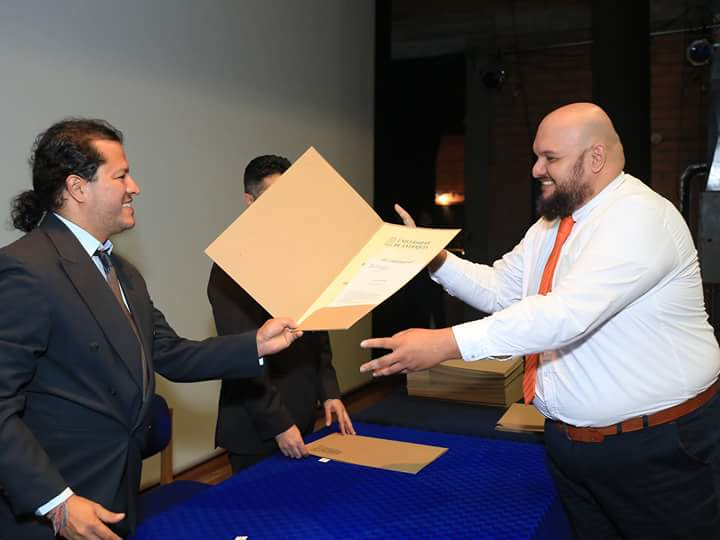

Durante dos años la Corporación Cultural Luna Roja ha venido ejecutando el proyecto LA DANZA FOLCLÓRICA OPORTUNIDAD PARA TODOS. FORMACIÓN ARTÍSTICA Y CULTURAL PARA LA PRIMERA INFANCIA, NIÑOS, JÓVENES Y ADULTOS DEL MUNICIPIO DE ACACIAS-META, evento apoyado por el Ministerio de Cultura- Programa Nacional de Concertación Cultural, proceso de formación que se desarrolló durante el segundo semestre de los años 2016 y 2017. Su Director Artístico maestro David Mauricio Gomez Pacheco manifiesta el éxito e impacto del proceso y expresa su satisfacción, dado que el Ministerio de cultura reiteró el respaldo al proyecto, con su aprobación para la presente vigencia Ministerio de Cultura